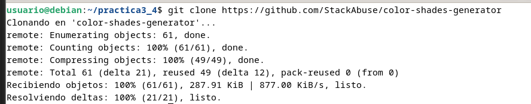

Práctica 3.3: Despliegue de una aplicación una aplicación React en Netlify (PaaS)
Introducción
En la práctica anterior hemos visto cómo desplegar una aplicación de Node.js sobre un servidor Express en local (en nuestro propio servidor Debian).
La práctica anterior podría asemejarse a las pruebas que realiza un desarrollador antes de pasar su aplicación al entorno de producción.
Ya sabemos que entendemos el despliegue o deployment como el proceso de mover nuestro código típicamente de un sistema de control de versiones a una plataforma de hosting donde se aloja y es servida a los usuarios finales.
A la hora de desplegar la aplicación en producción, podría utilizarse el método de copiar los archivos al servidor concreto vía el vetusto FTP, SSH u otros y desplegarla para dejarla funcionando. No obstante, esta práctica se acerca más a la realidad ya que utilizaremos un repositorio de Github y una plataforma de PaaS (Platform as a Service) como Netlify para desplegar adecuadamente nuestra aplicación en producción.
¿Qué es Github?
A pesar de que trataremos un poco más en profundidad Github en el siguiente tema, daremos una breve explicación aquí.
GitHub es un servicio basado en la nube que aloja un sistema de control de versiones (VCS) llamado Git. Éste permite a los desarrolladores colaborar y realizar cambios en proyectos compartidos, a la vez que mantienen un seguimiento detallado de su progreso.
El control de versiones es un sistema que ayuda a rastrear y gestionar los cambios realizados en un archivo o conjunto de archivos. Utilizado principalmente por ingenieros de software para hacer un seguimiento de las modificaciones realizadas en el código fuente, el sistema de control de versiones les permite analizar todos los cambios y revertirlos sin repercusiones si se comete un error.
¿Qué es Netlify?
Netlify es un proveedor de alojamiento en la nube que proporciona servicios de backend sin servidor (serverless) para sitios web estáticos. Está diseñado para maximizar la productividad en el sentido de que permite a los desarrolladores (especialmente orientados al frontend), y a los ingenieros construir, probar y desplegar rápidamente sitios web/aplicaciones.
Funciona conectándose a un repositorio de GitHub, de donde extrae el código fuente. A continuación, ejecutará un proceso de construcción para pre-renderizar las páginas de nuestro sitio web/aplicación en archivos estáticos.
Hay numerosas razones a favor de usar Netlify, aquí están algunas de ellas:
- Netlify hace que sea increíblemente sencillo desplegar un sitio web - de hecho, la forma más sencilla de lograrlo es utilizar GitHub, GitLab o Bitbucket para configurar el despliegue continuo.
- Netlify hace que sea súper fácil lanzar un sitio web con su solución de gestión de DNS incorporada.
- Podríamos desplegar fácilmente sólo una rama específica de nuestro proyecto Git - esto es útil para probar nuevas características que pueden o no llegar a la rama maestra/principal, o para determinar rápidamente cómo un PR (Pull Request) afectará a su sitio.
- Netlify te permite previsualizar cualquier despliegue que hagas o quieras hacer - esto te permite a ti y a tu equipo ver cómo se verán los cambios en producción sin tener que desplegarlos en tu sitio existente.
- Netlify proporciona una práctica función de envío de formularios que nos permite recoger información de los usuarios.
Note
Tanto Github, como Netlify, como otras diferentes alternativas, pueden ser controlados desde el terminal de nuestro Linux, por lo que seguiremos el procedimiento de contectarnos vía SSH a nuestro Debian y realizar las operaciones por terminal.
Creación de nuestra aplicación
Tras loguearnos por SSH en nuestro Debian, nos crearemos un directorio para albergar la aplicación con el nombre que queramos. En ese directorio, crearemos los 3 archivos (dos .html y un .js)que conformarán nuestra sencilla aplicación de ejemplo:
head.html
<!DOCTYPE html>
<html>
<head>
<title>Hola Mundo</title>
</head>
<body>
<h1>Esta es la pagina principal</h1>
<p><a href="/tailPage">Ir a la siguiente pagina</a></p>
</body>
tail.html
<!DOCTYPE html>
<html>
<head>
<title>Hola Mundo</title>
</head>
<body>
<h1>FUNCIONA</h1>
</body>
aplicacion.js
var http = require('http');
var fs = require('fs'); // para obtener los datos del archivo html
var port = process.env.PORT || 8080;
http.createServer(function (req, res) {
res.writeHead(200, { 'Content-Type': 'text/html' });
// req.url almacena el path o ruta de la URL
var url = req.url;
if (url === "/") {
// fs.readFile busca el archivo HTML
// el primer parámetro es el path al archivo HTML
// y el segundo es el callback de la función
// si el archivo no se encuentra, la función devuelve un error
// si el archivo se encuentra, el contenido del mismo se encuentra en pgres
fs.readFile("head.html", function (err, pgres) {
if (err)
res.write("HEAD.HTML NOT FOUND");
else {
// Las siguientes 3 lineas
// tienen la función de enviar el archivo html
// y finalizar el proceso de respuesta
res.writeHead(200, { 'Content-Type': 'text/html' });
res.write(pgres);
res.end();
}
});
}
else if (url === "/tailPage") {
fs.readFile("tail.html", function (err, pgres) {
if (err)
res.write("TAIL.HTML NOT FOUND");
else {
res.writeHead(200, { 'Content-Type': 'text/html' });
res.write(pgres);
res.end();
}
});
}
}).listen(port, function () {
console.log("SERVER STARTED PORT: 8080");
});
Ahora, tal y como hacemos siempre a la hora de crear nuestra aplicación Node.js, con el fin de crear el archivo package.json, utilizaremos en el terminal el comando:
npm init
Podemos probar que nuestra aplicación funciona perfectamente en local:
node aplicacion.js
Al ejecutar este comando nos indica que el puerto 8080 ya está en uso ya que en una práctica anterior se le vinculó a tomcat. Para resolver esto tenemos que:
1. Ejecutar el comando sudo lsof -i :8080 para averiguar el PID del proceso que está usando ese puerto.
2. Detenemos el proceso usando el comando sudo kill -9 <PID>. En mi caso fue sudo kill -9 674 y volvemos a ejecutar el comando del paso anterior para asegurarnos de que ya no hay ningún proceso que utilice ese puerto.
- Si el error persiste probar a ejecutar
sudo systemctl stop tomcat - Volver a ejecutar
node aplicacion.js
Y tras ello, debemos poder acceder, desde nuestra máquina anfitriona a http://IP-maq-virtual:8080

Ya con la aplicación creada y comprobada, podremos desplegarla en múltiples plataformas en la nube, como AWS, GCP, Azure, Digital Ocean, Heroku...
¡Ojo!
Para que nos funcione en la plataforma PaaS, en el archivo package.json que se nos ha creado al hacer el npm init debemos hacerle una modificación.
En el bloque scripts, debemos borrar lo que haya dentro y dejar únicamente dentro de él:
`"start": "node aplicacion.js"`
De forma que el sitio donde la despleguemos sepa que comando utilizar para iniciar la aplicación tras desplegarla.
El archivo package.json tiene que quedar así:
Aplicación para Netlify
Puesto que el interés en este módulo radica en el proceso de despliegue, suponiendo que la parte de desarrollo ya es abordada en otros módulos, vamos a utilizar una aplicación de ejemplo que nos ahorre tiempo para centrarnos en el despliegue.
Nos clonaremos este repositorio:
git clone https://github.com/StackAbuse/color-shades-generator

Proceso de despliegue en Netlify
Por mera curiosidad y ambición de aprendizaje, vamos a ver dos métodos de despliegue en Netlify:
- Despliegue manual desde el CLI de Netlify, es decir, desde el terminal, a partir de un directorio local de nuestra máquina.
- Despliegue desde un código publicado en uno de nuestros repositorios de Github
El primero nos permitirá conocer el CLI de Netlify y el segundo nos acercara más a una experiencia real de despliegue.
Task
Vuestra primera tarea será [registraros en Netlify](https://www.netlify.com/) con vuestro email (no con vuestra cuenta de Github) y decirle que no cuando os pida enlazar con vuestra cuenta de Github (lo haremos más adelante).
Despliegue mediante CLI
Una vez registrados, debemos instalar el CLI de Netlify para ejecutar sus comandos desde el terminal:
sudo npm install netlify-cli -g
Está claro que para realizar acciones de deploy, Netlify nos solicitará una autenticación, esto se hace mediante el comando:
netlify login
Vamos al navegador y autorizamos el inicio de sesión
Ya hemos iniciado sesión
El cual nos muestra una pantalla del navegador para que concedamos la autorización pertinente. Sin embargo, recordemos el problema de que estamos conectados por SSH a nuestro servidor y no tenemos la posibilidad del uso de un entorno gráfico.
En este caso, siguiendo las instrucciones de la documentación:
Generamos el token de acceso
- Lo establecemos como variable de ambiente:

Y nos logueamos
netlify login
Bueno, tenemos el código de nuestra aplicación, tenemos nuestra cuenta en Netlify y tenemos el CLI necesario para ejecutar comandos desde el terminal en esa cuenta... ¿Podemos proceder al despliegue sin mayores complicaciones?
La respuesta es NO, como buenos desarrolladores y en base a experiencias anteriores, ya sabéis que hay que hacer un build de la aplicación para, posteriormente, desplegarla. Vamos a ello.
En primer lugar, como sabemos, debemos instalar todas las dependencias que vienen indicadas en el archivo package.json:
npm install
Y cuando ya las tengamos instaladas podemos proceder a realizar el build:
npm run build
Esto nos creará una nueva carpeta llamada build que contendrá la aplicación que debemos desplegar. Y ya podemos hacer un pre-deploy de la aplicación de la que hemos hecho build antes:
netlify deploy
Nos hará algunas preguntas para el desplieuge:
- Indicamos que queremos crear y configurar un nuevo site
- El Team lo dejamos por defecto
- Le indicamos el nombre que queremos emplear para la web (nombre-practica3-4) y el directorio a utilizar para el deploy (directorio ./build).
Y si nos indica que todo ha ido bien e incluso podemos ver el "borrador" (Website Draft URL) de la web que nos aporta, podemos pasarla a producción finalmente tal y como nos indica la misma salida del comando:

If everything looks good on your draft URL, deploy it to your main site URL with the --prod flag.
netlify deploy --prod
Warning
No olvides desplegar finalmente en producción y comprobar que puedes acceder a la URL.
RESULTADO
Despliegue mediante conexión con Github
En primer lugar, vamos a eliminar el site que hemos desplegado antes en Netlify para evitarnos cualquier problema y/o conflicto:
Confirmamos la eliminación con el nombre del proyecto

En segundo lugar, vamos a borrar el directorio donde se halla el repositorio clonado en el paso anterior para así poder empezar de 0:
rm -rf directorio_repositorio
Como queremos simular que hemos picado el código a man o en local y lo vamos a subir a Github por primera vez, nos descargaremos los fuentes en formato .zip sin que tenga ninguna referencia a Github:
wget https://github.com/StackAbuse/color-shades-generator/archive/refs/heads/main.zip
Creamos una carpeta nueva y descomprimimos dentro el zip:
mkdir practica3.4
unzip main.zip -d practica3.4/
Entramos en la carpeta donde está el código:
cd practica3.4/color-shades-generator-main/
Ahora debemos crear un repositorio completamente vacío en Github que se llame practicaTresCuatro:
Y tras ello, volviendo al terminal a la carpeta donde estábamos, la iniciamos como repositorio, añadimos todo el contenido de la misma para el commit, hacemos el commit con el mensaje correspondiente y creamos la rama main:
$ git init
$ git add .
$ git commit -m "Subiendo el código..."
$ git branch -M main
Y ahora sólo queda referenciar nuestra carpeta al repositorio recién creado en Github y hacer un push para subir todo el contenido del commit a él:
$ git remote add origin https://github.com/username/practicaTresCuatro.git
$ git push -u origin main

Ahora que ya tenemos subido el código a GitHub, de alguna manera debemos enganchar o enlazar nuestra cuenta de Github con la de Netlify para que éste último pueda traerse el código de allí, hacer el build y desplegarlo. Así pues, entramos en nuestro dashboard de Netlify y le damos a importar proyecto existente de git:
Le indicamos que concretamente de Github:
Y nos saltará una ventana pidiendo que autoricemos a Netlify a acceder a nuestros repositorios de Github:
Y luego le indicaremos que no acceda a todos nuestros repositorios sino sólo al repositorio que necesitamos, que es donde tenemos el código de nuestra aplicación:
Y ya quedará todo listo:
Y desplegamos la aplicación:

Netlify se encargará de hacer el build de forma automática tal y como hemos visto en la imagen de arriba, con el comando npm run build, publicando el contenido del directorio build.
Atención
Tras el deploy, en "Site settings" podeís y debéis cambiar el nombre de la aplicación por nombre-practica3-4, donde *nombre* es vuestro nombre.
Lo que hemos conseguido de esta forma es que, cualquier cambio que hagamos en el proyecto y del que hagamos commit y push en Github, automáticamente genere un nuevo despliegue en Netlify. Es el principio de lo que más adelante veremos como despliegue continuo.
Comprobemos que realmente es así:
- Dentro de la carpeta
publicencontramos el archivorobots.txt, cuyo cometido es indicar a los rastreadores de los buscadores a qué URLs del sitio pueden acceder. A este archivo se puede acceder a través de la URL del site:
- Dentro de la carpeta
public, utilizando el editor de texto que prefiráis en vuestro terminal, modificad el archivorobots.txtpara que excluya un directorio que se llamenombre_apellido, utilizando obviamente vuestro nombre y apellido.
User-agent: *
Disallow: /nombre_y_apellido/
-
Haz un nuevo
commitypush(del caso anterior, recuerda el commandogitprevio para añadir los archivos a hacer commit) -
Comprueba en el dashboard de Netlify que se ha producido un nuevo deploy de la aplicación hace escasos segundos
Accede a https://url_de_la_aplicacion/robots.txt y comprueba que, efectivamente, se ve reflejado el cambio
Task
Documenta la realización de toda esta práctica adecuadamente, con las explicaciones y justificaciones necesarias y las capturas de pantalla pertinentes.
VERCEL
Task
Repite y replica este proceso de despliegue en [Vercel](https://vercel.com/), otra plataforma PaaS.
Seleccionamos la opción de seguir con GitHub
Autorizamos que Vercel tenga persmisos para conectarse a Git
Instalamos Vercel en nuestro repositorio PracticaTresCuatro de GitHub
Desplegamos el proyecto

Tras esto ya tenemos nuestro proyecto desplegado
RESULTADO
Si vamos a https://practica-tres-cuatro-seven.vercel.app nos mostrará la app desplegada.
Referencias
Deploying Node.js applications
How to deploy your website to Netlify for free